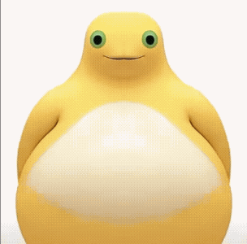
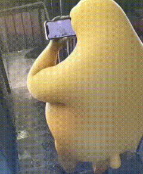

01 · 奶蛙绷不住了

240 × 240 · 66 帧 · 538 KiB
保存 GIF · 来源240 × 240 · 66 帧 · 538 KiB
保存 GIF · 来源
240 × 242 · 15 帧 · 253 KiB
保存 GIF · 来源
240 × 240 · 50 帧 · 508 KiB
保存 GIF · 来源
451 × 300 · 18 帧 · 1149 KiB
保存 GIF · 来源
304 × 300 · 37 帧 · 621 KiB
保存 GIF · 来源240 × 240 · 121 帧 · 1182 KiB
保存 GIF · 来源
240 × 292 · 118 帧 · 914 KiB
保存 GIF · 来源380 × 300 · 32 帧 · 853 KiB
保存 GIF · 来源